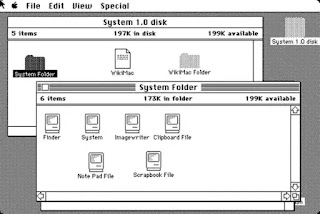
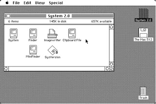

Sejarah Sistem Operasi Mac
MacOS merupakan salah satu jenis sistem operasi pada komputer yang khusus digunakan untuk untuk mengoperasikan Notebook Apple Macintosh buatan Apple Computer. Menurut catatan sejarah, untuk pertama kalinya Macintosh diperkenalkan ke publik pda Januari 1984 melalui iklan Super Bowl.
Tetapi sebenarnya, cikal bakal hadirnya Macintosh jauh sebelum perkenalan itu. Macintosh merupakan perangkat piranti pertama yang menggunakan sistem antarmuka grafis GUI (Graphical User Interface). Karena itu banyak yang menganggap bahwa apa yang dilakukan oleh Apple adalah langkah yang revolusioner dalam dunia PC.
System 1
Tahun 1984 untuk pertama kalinya MacOS dirilis dengan nama System 1. Kehadiranya menjadi gebrakan OS pada waktu itu. MacOS hadir sebagai OS yang revolusioner karena berhasil menjadi satu-satunya OS yang sepenuhnya menggunakan GUI. Baru setelah itu, OS lain ikutan menggunakan GUI. System 1 masih menggunakan prinsip satu aplikasi satu waktu dan belum bisa multitasking.
System 2
Satu tahun berikutnya MacOS keluar dengan System 2 tepatnya pada April 1985. System 2 sudah dilengkapi dengan Finder 4.1 dan Mini Finder sehingga bisa membuka aplikasi lebih cepat. Hebatnya lagi, System 2 telah mampu melakukan screenshot dan shutdown pada menu komputer.
System 3
Tahun 1986, Apple merilis MacOS System 3 untuk MacPlus. System 3 telah dilengkapi dengan Finder 5.1 sehingga bisa berjalan dengan lebih cepat dibanding dengan generasi sebelumnya. Sistem 3 ini diupdate sebanyak dua kali, tepatnya pada Juni 1989 keluar System 3.2, dan System 3.3 pada Januari 1987.
System 4
Ditahun yang sama tepatnya pada 1987, MacOS merilis System 4 menggunakan finder 5.4. system ini bisa dijalankan pada Mac dengan kapasitas RAM 512k dan yang lebih tinggi. MacOS System 4 ini juga mengalami pembaharuan dengan keluarnya System 4.1 menggunakan Finder 5.5.
System 5
Tak puas dengan MacOS sebelumnya, Apple merilis System 5 di tahun yang sama 1987 menggunakan Finder 6.0. pada generasi ini, kemampuan OS sudah bisa melakukan copy paste lebih mudah. Pada System 5 ini pula, Apple pertama kali mengenalkan fitur multitasking dari MultiFinder.
System 6
Pada Juni 1988, rilislah System 6 dengan sistem operasi yang lebih stabil. Bahkan System 6 bisa dijalankan dengan sangat cepat. Hebatnya lagi, System 6 sudah bisa melakukan Floppy Disk meski hanya memakai 300-400 kb RAM.
System 7
Pada 13 Mei 1991 menjadi terakhir kalinya System diperkenalkan dengan merilis System 7 yang melakukan perubahan signifikan dibanding generasi sebelumnya. Misalnya saja, pada OS ini pengguna bisa melakukan share file pada hardisk memanfaatkan sistem jaringan.
1997 Pertama Kali MacOS diperkenalkan Lewat MacOS 7.6
Inilah untuk pertama kalinya MacOS diperkenalkan dan tidak lagi menggunakan nama System. Meski sebenarnya ini adalah System 7.6 tetapi lebih dikenal sebagai MacOS 7.6.
MacOS 8 dan MacOS 9
Setelah keberhasilan peluncuran MacOS 7.6, keluarlah Mac OS 8 pada 1997. Respon publik luar biasa, terutama karena MacOS ini memiliki pembaharuan yang sangat canggih bila dibanding dengan generasi sebelumnya. Buktinya Mac OS 8 terjual sebanyak 3 juta kopi dalam kurun waktu enam bulan saja selepas peluncuran. Dua tahun berselang setelah MacOS 8, keluarlah MacOS 9.
Cheetah (MacOS X)
Baru pada tahun 2000, MacOS mengeluarkan generasi terbarunya, MacOS X. Inilah salah satu MacOS yang mengalami peningkayan performa dibanding yang sebelumnya. Hal ini menjawab kebutuhan publik yang menginginkan sistem operasi yang lebih canggih dan lebih cepat serta dengan tingkat keamanan yang baik.
Puma (MacOS X 10.1) dan Jaguar (MacOS X 10.2)
Secara berturut-turut pada tahun 2003 dan 2005, MacOS keluar dengan versi pembaharuanya. Ada Mac OS X 10.3 dan Mac OS X 10.4. keduanya sudah dilengkapi dengan fitur iChat AV, Finder akses sekali klik, serta dengan tampilan Expose. Khusus untuk Mac OS X 10.4 meraih sukses dengan angka penjualan 2 juta kopi dalam waktu enam bulan.
Leopard (MacOS X 10.5) dan Snow Leopard (MacOS X 10.6) Meluncur
Tahun 2007 dan 2009 secara berurutan keluarlah Mac OS X 10.5 yang diberi nama Leopard dan Mac OS X 10.6 dengan nama Snow Leopard meluncur. Keduanya mengalami pembahruan pada bagian fitur Cover Flow di Finder dan Time Machine.
Integrasi iOS dan Mac Lewat Lion (Mac OS X 10.7)
Inilah untuk pertama kal iOS dan Mac bisa terintegrasi dengan baik, tepatnya lewa Mac OS X 10.7 yang diberi nama Lion. Mac ini bisa terintegrasi dengan seluruh perangkat iOS seperti iPad, iPod Touch, dan Apple TV.
Mountain Lion (Mac OS X 10.8) dan Mavericks (Mac OS X 10.9)
Berikutnya keluarlah Mountain Lion dan OS Mavericks yang sudah memiliki dukungan berbagai fitur media sosial seperti iMessage, iCloud, dan lainya seperti Twitter. Khusus untuk OS Mavericksmengalami peningkatan pada bagian peningkatan Finder, ketahanan baterai, power users dan integrasi iCloud.
Yosemite (Mac OS X 10.10)
Setelah OS Mavericks ada nama MAC OS X dengan nama Yosemite. OS ini menggunakan user interface OS X. Bahkan pada bagian Grafis skeuomorphism berganti menjadi desain grafis datar serta efek tembus kabur.
Era El Capitan (Mac OS X 10.11) Hingga Saat Ini
Akhir tahun 2015, dirilislah El Capitan menggantikan nama Yosemite. Inilah generasi OS penerus sekaligus penyempurna OS X Yosemite. Baru kemudian setelah OS X ini dirilislah OS X 10.7.5 yang diberi nama macOS Sierra. Dan saat ini telah keluarlah OS X 10.8 yang diberi nama macOS High Sierra.
References:
https://www.jurnalponsel.com/pengertian-macos-beserta-sejarah-kelebihan-dan-kekurangan-macos/

Dinda Putri Ramadani
Hai!!! Perkenalkan saya Dinda Putri Ramadani salah satu mahasiswi dari Universitas Dinamika Bangsa Jambi. Blog ini untuk memenuhi tugas Sistem Operasi yang diberikan oleh dosen pembimbing saya. Terima Kasih!!! xixixi